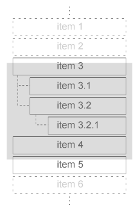

Containers List
Elementary is about displaying its widgets in a nice layout, for this purpose it provides a number of containers.
It's important to note that as containers widgets don't have their own visual identity, so here we show one use for them and a diagram showing their component parts:
- Elm_Gengrid

- Elm_Genlist


- Elm_Box


- Elm_Grid
- Layout


- Elm_Naviframe


- Elm_Scroller

- Elm_Table

The other two main groups in Elementary are:
- Infrastructure list - These are modules that deal with Elementary as a whole.
- Widget list - These are the widgets you'll compose your UI out of.